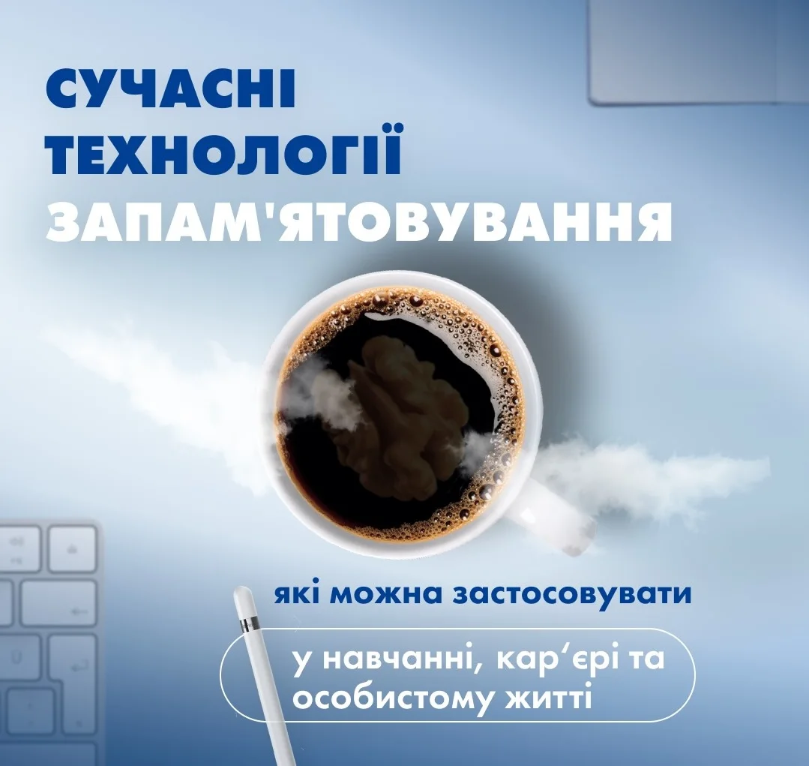

Чому іноді так складно запамʼятати обличчя, імʼя, номер, пароль, іноземне слово?
Згадайте школу чи університет…
Вивчіть 3 вірші, 10 формул, 50 неправильних дієслів і ще 4 параграфи історії на додачу.
На жаль…
Зубріння не мотивує. І не допомагає запамʼятовувати.
Але, на щастя, можна інакше!
Дізнатися більше

Мене звуть Олексій Бессонов.
Вже 15 років я займаюся памʼяттю, я рекордсмен і чемпіон України із запамʼятовування 🧠
Але так було не завжди.
Я вчився у звичайних школах та вишах. Я на собі знаю підводні камені зубріння. І також знаю, що воно не працює…
Все, що я зубрив, забувалося за пару днів. Мені були потрібні інші техніки.
Коли я служив в армії, ми з товаришем вивчали різні методи запамʼятовування облич, мап, карт, паролів, імен, іноземних мов.
Потім я тестував сотні методик на собі, найкращі з них на учнях.
І врешті створив систему запамʼятовування, яка допомагає мозку запамʼятовувати феноменально 🏆, незалежно від віку, досвіду і здібностей.
Хочу поділитися нею з вами ❤️
Запрошую вас на безкоштовний майстер-клас «Феноменальна памʼять» о 19:00 за Києвом / 18:00 за Берліном.
- 🪓 Розберемо та зруйнуємо деструктивні міфи, що гальмують запамʼятовування
- 🧠 Увімкнемо памʼять, щоб відчути, на що насправді здатен ваш мозок
- 🗒 Потренуємо мнемотехніки для запамʼятовування текстів і цифр
- 🔑 Підберемо ключики до вашої феноменальної памʼяті
✅ Тривалість: 2 години
Реєструйтеся за посиланням (всередині також подарунок від мене 🎁):
Зареєструватися на майстер-клас
ОБ
Олексій БессоновРекордсмен і чемпіон України із запамʼятовування